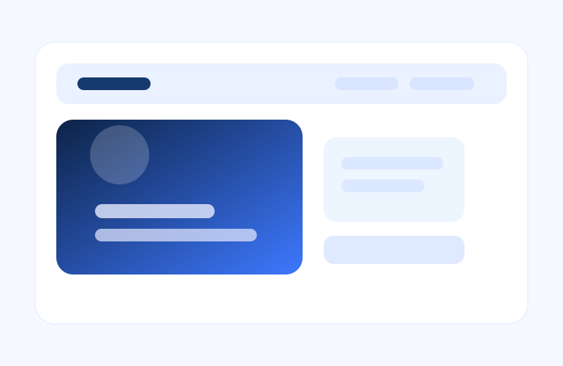
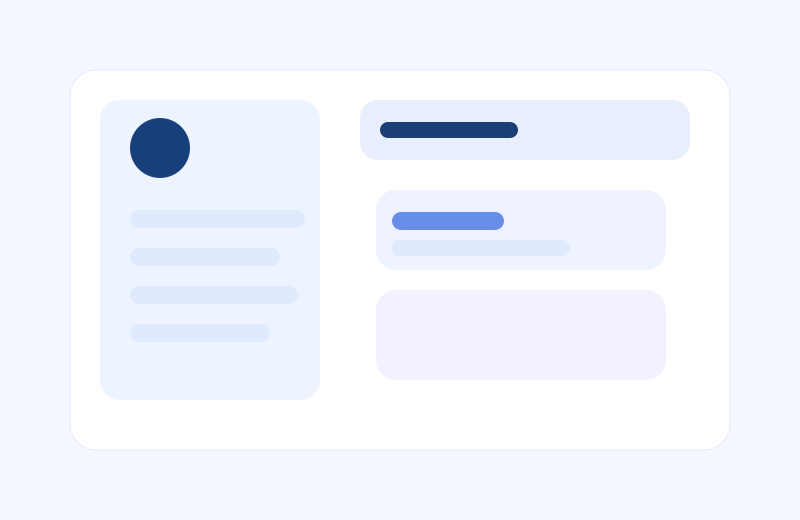
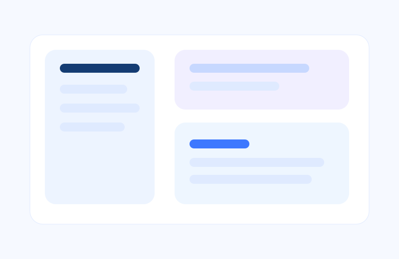

Web Development
Currently learning HTML, CSS, and JavaScript to build responsive, accessible websites.
- HTML
- CSS
- JavaScript
I am a student at Miva Open University studying in the Data Science programme while building a strong foundation in web technologies, problem-solving, and digital skills.
I am building practical digital skills while growing academically and personally.
I am a student at Miva Open University, currently developing my understanding of computing and the web through coursework in introductory web technologies. My academic focus is Data Science, and I am gradually building practical knowledge in programming, web development, and digital tools. I enjoy learning how digital solutions can be used to solve real problems and communicate ideas clearly.
Before this stage of my academic journey, I worked in administrative and customer-facing roles, including as a secretary and sales representative in a travel agency setting. That experience strengthened my communication, organisational, and record-keeping skills, and it helped me build confidence in handling inquiries, supporting customers, and managing daily administrative tasks.
Skills I am learning and developing with honesty and curiosity.
Currently learning HTML, CSS, and JavaScript to build responsive, accessible websites.
Strengthening my logic and problem-solving through Python practice and small projects.
I use Microsoft Office tools for documentation, presentation, and data organisation.
Examples of learning projects and demonstrations I am building.

A responsive personal portfolio presenting my background, skills, and learning goals.

An interactive planning tool for assignments, due dates, and task tracking.

A sample interface showing how customer inquiries and product records can be organised.
I use an academic planner to stay organised, track deadlines, and manage my assignments in a structured way. This helps me keep my studies focused and my progress visible.
I'm open to learning, collaboration, and discussing ideas about technology, data, and web development.